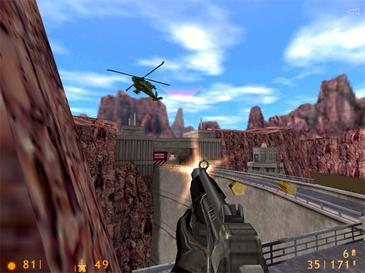
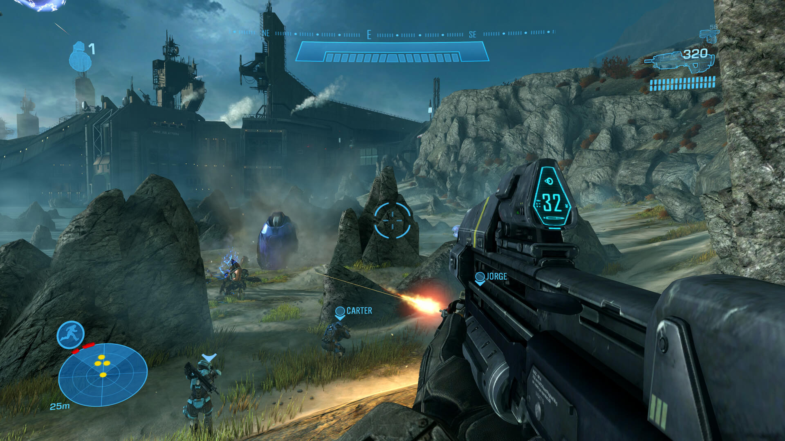
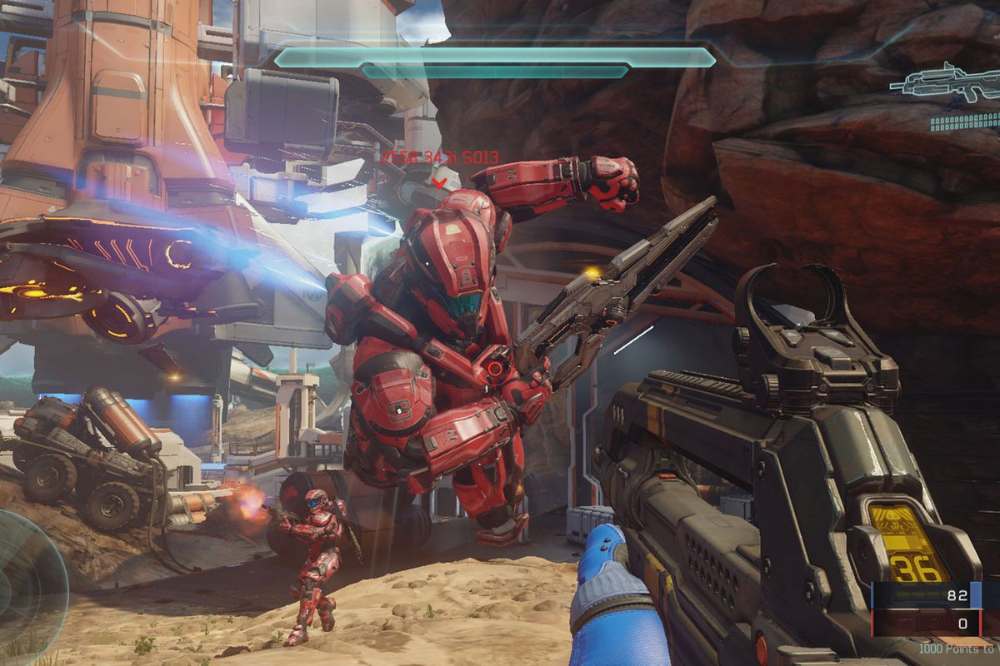
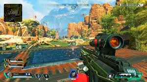

First-person shooter (FPS) is a video game genre centered on gun and other weapon-based combat in a first-person perspective; that is, the player experiences the action through the eyes of the protagonist. The genre shares common traits with other shooter games, which in turn makes it fall under the heading action game. Since the genre's inception, advanced 3D and pseudo-3D graphics have challenged hardware development, and multiplayer gaming has been integral.
The first-person shooter genre has been traced as far back as Maze War, development of which began in 1973, and 1974's Spasim. Later, and after more playful titles like MIDI Maze in 1987, the genre coalesced into a more violent form with 1992's Wolfenstein 3D, which has been credited with creating the genre's basic archetype upon which subsequent titles were based. One such title, and the progenitor of the genre's wider mainstream acceptance and popularity, was Doom, one of the most influential games in this genre; for some years, the term Doom clone was used to designate this genre due to Doom's influence. Corridor shooter was another common name for the genre in its early years, since processing limitations of the era's hardware meant that most of the action in the games had to take place in enclosed areas, such as in cramped spaces like corridors and tunnels.
1998's Half-Life—along with its 2004 sequel Half-Life 2—enhanced the narrative and puzzle elements. In 1999, the Half-Life mod Counter-Strike was released and, together with Doom, is perhaps one of the most influential first-person shooters. GoldenEye 007, released in 1997, was a landmark first-person shooter for home consoles, while the Halo series heightened the console's commercial and critical appeal as a platform for first-person shooter titles. In the 21st century, the first-person shooter is the most commercially viable video game genre, and in 2016, shooters accounted for over 27% of all video game sales.
First-person shooters are a type of shooter game, featuring a first-person point of view with which the player sees the action through the eyes of the player character. They are unlike third-person shooters, in which the player can see (usually from behind) the character they are controlling. The primary design element is combat, mainly involving firearms.
First person-shooter games are also often categorized as being distinct from light gun shooters, a similar genre with a first-person perspective which use light gun peripherals, in contrast to first-person shooters which use conventional input devices for movement. Another difference is that first-person light-gun shooters like Virtua Cop often feature "on-rails" (scripted) movement, whereas first-person shooters like Doom give the player more freedom to roam.
The first-person shooter may be considered a distinct genre itself, or a type of shooter game, in turn a subgenre of the wider action game genre. Following the release of Doom in 1993, games in this style were commonly termed "Doom clones"; over time this term has largely been replaced by "first-person shooter". Wolfenstein 3D, released in 1992, the year before Doom, has been credited with introducing the genre, but critics have since identified similar though less advanced games developed as far back as 1973. There are occasional disagreements regarding the specific design elements which constitute a first-person shooter. For example, Deus Ex or BioShock may be considered as first-person shooters, but may also be considered role-playing video games as they borrow from this genre extensively. Certain puzzle games like Portal are also called first-person shooters, but lack any direct combat or shooting element, instead using the first-person perspective to help immerse players within the game to help solve puzzles. Some commentators extend the definition to include combat flight simulators where the cockpit or vehicle takes place of the hands and weapons.

Like most shooter games, first-person shooters involve an avatar, one or more ranged weapons, and a varying number of enemies. Because they take place in a 3D environment, these games tend to be somewhat more realistic than 2D shooter games, and have more accurate representations of gravity, lighting, sound and collisions. First-person shooters played on personal computers are most often controlled with a combination of a keyboard and mouse. This system has been claimed as superior to that found in console games, which frequently use two analog sticks: one used for running and sidestepping, the other for looking and aiming. It is common to display the character's hands and weaponry in the main view, with a heads-up display showing health, ammunition and location details. Often, it is possible to overlay a map of the surrounding area.
First-person shooters often focus on action gameplay, with fast-paced and bloody firefights, though some place a greater emphasis on narrative, problem-solving and logic puzzles. In addition to shooting, melee combat may also be used extensively. In some games, melee weapons are especially powerful, a reward for the risk the player must take in maneuvering his character into close proximity to the enemy. In other situations, a melee weapon may be less effective, but necessary as a last resort. "Tactical shooters" are more realistic, and require teamwork and strategy to succeed; the player often commands a squad of characters, which may be controlled by the game or by human teammates.
First-person shooters typically give players a choice of weapons, which have a large impact on how the player will approach the game. Some game designs have realistic models of actual existing or historical weapons, incorporating their rate of fire, magazine size, ammunition amount, recoil and accuracy. Other first-person shooter games may incorporate imaginative variations of weapons, including future prototypes, "alien technology" scenario defined weaponry, and/or utilizing a wide array of projectiles, from industrial labor tools to laser, energy, plasma, rocket and grenade launchers or crossbows. These many variations may also be applied to the tossing animations of grenades, rocks, spears and the like. Also, more unconventional modes of destruction may be employed from the viewable users hands such as flames, electricity, telekinesis or other supernatural constructions. However, designers often allow characters to carry varying multiples of weapons with little to no reduction in speed or mobility, or perhaps more realistically, a pistol or smaller device and a long rifle or even limiting the player to only one weapon at a time. There are often options to trade up, upgrade or swap out in most games. Thus, the standards of realism varies between design elements. The protagonist can generally be healed and re-armed by means of items such as first aid kits, simply by walking over them. Some games allow players to accumulate experience points similar to those found in role-playing games, which can unlock new weapons and abilities.
First-person shooters may be structurally composed of levels, or use the technique of a continuous narrative in which the game never leaves the first-person perspective. Others feature large sandbox environments, which are not divided into levels and can be explored freely. In first-person shooters, protagonists interact with the environment to varying degrees, from basics such as using doors, to problem solving puzzles based on a variety of interactive objects. In some games, the player can damage the environment, also to varying degrees: one common device is the use of barrels containing explosive material which the player can shoot, destroying himself and harming nearby enemies. Other games feature environments which are extensively destructible, allowing for additional visual effects. The game world will often make use of science fiction, historic (particularly World War II) or modern military themes, with such antagonists as aliens, monsters, terrorists and soldiers of various types. Games feature multiple difficulty settings; in harder modes, enemies are tougher, more aggressive and do more damage, and power-ups are limited. In easier modes, the player can succeed through reaction times alone; on more difficult settings, it is often necessary to memorize the levels through trial and error.
First-person shooters may feature a multiplayer mode, taking place on specialized levels. Some games are designed specifically for multiplayer gaming, and have very limited single player modes in which the player competes against game-controlled characters termed "bots". Massively multiplayer online first-person shooters allow thousands of players to compete at once in a persistent world. Large scale multiplayer games allow multiple squads, with leaders issuing commands and a commander controlling the team's overall strategy. Multiplayer games have a variety of different styles of match. The classic types are the deathmatch (and its team-based variant) in which players score points by killing other players' characters; and capture the flag, in which teams attempt to penetrate the opposing base, capture a flag and return it to their own base whilst preventing the other team from doing the same. Other game modes may involve attempting to capture enemy bases or areas of the map, attempting to take hold of an object for as long as possible while evading other players, or deathmatch variations involving limited lives or in which players fight over a particularly potent power-up. These match types may also be customizable, allowing the players to vary weapons, health and power-ups found on the map, as well as victory criteria. Games may allow players to choose between various classes, each with its own strengths, weaknesses, equipment and roles within ateam.
There are many free-to-play first-person shooters on the market now, including Wolfenstein: Enemy Territory, Apex Legends, Team Fortress 2, and Planetside 2. Some games are released as free-to-play as their intended business model and can be highly profitable (League of Legends earned $2 billion in 2017), but others such as Eternal Crusade begin their life as paid games and become free-to-play later to reach a wider audience after an initially disappointing reception. Some player communities complain about freemium first-person-shooters, fearing that they create unbalanced games, but many game designers have tweaked prices in response to criticism, and players can usually get the same benefits by playing longer rather than paying.
The earliest two documented first-person shooter video games are Maze War and Spasim. Maze War was originally developed in 1973 by Greg Thompson, Steve Colley and Howard Palmer, high-school students in a NASA work-study program trying to develop a program to help visualize fluid dynamics for spacecraft designs. The work became a maze game presented to the player in the first-person, and later included support for a second player and the ability to shoot the other player to win the game. Thompson took the game's code with him to Massachusetts Institute of Technology, where with help from Dave Lebling to create an eight-player version that could be played over ARPANET, computer-run players using artificial intelligence, customizable maps, online scoreboards and a spectator mode. Spasim had a documented debut at the University of Illinois in 1974. The game was a rudimentary space flight simulator for up to 32 players, featuring a first-person perspective. Both games were distinct from modern first-person shooters, involving simple tile-based movement where the player could only move from square to square and turn in 90-degree increments. Such games spawned others that used similar visuals to display the player as part of a maze (such as Akalabeth: World of Doom in 1979), and were loosely called "rat's eye view" games, since they gave the appearance of a rat running through a maze. Another crucial early game that influenced first-person shooters was Wayout. It featured the player trying to escape a maze, using ray casting to render the environment, simulating visually how each wall segment would be rendered relative to the player's position and facing angle. This allowed more freeform movement compared to the grid-based and cardinal Maze War and Spasim. Spasim led to more detailed combat flight simulators and eventually to a tank simulator, developed for the U.S. Army, in the later 1970s. These games were not available to consumers, however, and it was not until 1980 that a tank video game, Battlezone, was released in arcades. A version of the game was released in 1983 for home computers and became the first successful mass-market game featuring a first-person viewpoint and wireframe 3D graphics, presented using a vector graphics display.
MIDI Maze, an early first-person shooter released in 1987 for the Atari ST, featured maze-based gameplay and character designs similar to Pac-Man, but displayed in a first-person perspective. Later ported to various systems—including the Game Boy and Super NES—under the title Faceball 2000, it featured the first network multiplayer deathmatches, using a MIDI interface. It was a relatively minor game, but despite the inconvenience of connecting numerous machines together, its multiplayer mode gained a cult following: 1UP.com called it the "first multi-player 3D shooter on a mainstream system" and the first "major LAN action game". Id Software's Hovertank 3D pioneered ray casting technology in May 1991 to enable faster gameplay than 1980s vehicle simulators; and Catacomb 3-D introduced another advance, texture mapping, in November 1991. The second game to use texture mapping was Ultima Underworld: The Stygian Abyss, a March 1992 action role-playing game by Looking Glass Technologies that featured a first-person viewpoint and an advanced graphics engine. In October 1990, id developer John Romero learned about texture mapping from a phone call to Paul Neurath. Romero described the texture mapping technique to id programmer John Carmack, who remarked, "I can do that.", and would feel motivated by Looking Glass's example to do the same in Catacomb 3-D. Catacomb 3-D also introduced the display of the protagonist's hand and weapon (in this case, magical spells) on the screen, whereas previously aspects of the player's avatar were not visible. The experience of developing Ultima Underworld would make it possible for Looking Glass to create the Thief and System Shock series years later.
Wolfenstein 3D (created by id Software as a successor of the successful 1980s video games Castle Wolfenstein and Beyond Castle Wolfenstein and released in 1992) was an instant success, fueled largely by its shareware release, and has been credited with inventing the first-person shooter genre. It was built on the ray casting technology pioneered in earlier games to create a revolutionary template for shooter game design, which first-person shooters are still based upon today. Despite its violent themes, Wolfenstein largely escaped the controversy generated by the later Doom, although it was banned in Germany due to the use of Nazi iconography; and the Super NES version replaced the enemy attack dogs with giant rats. Apogee Software, the publisher of Wolfenstein 3D, followed up its success with Blake Stone: Aliens of Gold in 1993. The game was initially well-received but sales rapidly declined in the wake of the success of id's Doom, released a week later.
Doom, released as shareware in 1993,[18] refined Wolfenstein 3D's template by adding improved textures, variations in height (e.g., stairs the player's character could climb) and effects such as flickering lights and patches of total darkness, creating a more believable 3D environment than Wolfenstein 3D's levels all of which had a flat-floor space. Doom allowed competitive matches between multiple players, termed "deathmatches," and the game was responsible for the word's subsequent entry into the video gaming lexicon. According to creator John Romero, the game's deathmatch concept was inspired by the competitive multiplayer of fighting games such as Street Fighter II and Fatal Fury. Doom became so popular that its multiplayer features began to cause problems for companies whose networks were used to play the game.
Doom has been considered the most important first-person shooter ever made. It was highly influential not only on subsequent shooter games but on video gaming in general, and has been available on almost every video gaming system since. Multiplayer gaming, which is now integral to the first-person shooter genre, was first achieved successfully on a large scale with Doom. While its combination of gory violence, dark humor and hellish imagery garnered acclaim from critics, these attributes also generated criticism from religious groups, with other commentators labelling the game a "murder simulator." There was further controversy when it emerged that the perpetrators of the Columbine High School massacre were fans of the game; the families of several victims later unsuccessfully attempted to sue numerous video game companies - among them id Software - which the families claimed inspired the massacre. In 1994, Raven Software released Heretic, which used a modified version of the Doom engine that allowed for vertical aiming, an inventory system to store and select items, and gibs.
>Star Wars: Dark Forces was released in 1995 after LucasArts decided Star Wars would make appropriate material for a game in the style of Doom. However, Star Wars: Dark Forces added several technical features that Doom lacked, such as the ability to crouch, jump, or look up and down. Dark Forces also was one of the first games to incorporate 3D-designed objects rendered into the game's 2D engine. Apogee's Duke Nukem 3D (sequel to the earlier platformers Duke Nukem and Duke Nukem II), released in 1996, was "the last of the great, sprite-based shooters" winning acclaim for its humor based around stylised machismo as well as its gameplay. However, some found the game's (and later the whole series') treatment of women to be derogatory and tasteless.
>Most shooters in this period were developed for IBM PC compatible computers. On the Macintosh side, Bungie released its first shooter, Pathways into Darkness in 1993, which featured more adventure and narrative elements alongside first-person shooter gameplay. Pathways had been inspired by Wolfenstein 3D, and born out of an attempt to take their previous top-down dungeon exploration game Minotaur: The Labyrinths of Crete into a 3D setting. In the subsequent year, Bungie released Marathon, which streamlined concepts from Pathways by eliminating role-playing elements in favor of the shooter action. Marathon was successful leading to two sequels to form the Marathon Trilogy, and Marathon the standard for first-person shooters on that platform. Marathon pioneered or was an early adopter of several new features such as freelook, dual-wielded and dual-function weapons, versatile multiplayer modes (such as King of the Hill, Kill the Man with the Ball, and cooperative play), and friendly non-player characters (NPCs). The Marathon games also had a strong emphasis on storytelling in addition to the action, which would coadvances in 3d graphicsntinue in Bungie's future projects, Halo and Destiny.
In 1994, Exact released Geograph Seal for the Japanese Sharp X68000 home computer. An obscure import title as far as the Western market was concerned, it was nonetheless "a fully 3D polygonal first-person shooter" with innovative platform game mechanics and "free-roaming" outdoor environments. The following year, Exact released its successor for the PlayStation console, Jumping Flash!, which placed more emphasis on its platform elements. Descent (released by Parallax Software in 1995), a game in which the player pilots a spacecraft around caves and factory ducts, was a truly three-dimensional first-person shooter. It abandoned sprites and ray casting in favour of polygons and six degrees of freedom.
Shortly after the release of Duke Nukem 3D in 1996, id Software released the much anticipated Quake. Like Doom, Quake was influential and genre-defining, featuring fast-paced, gory gameplay, but used 3D polygons instead of sprites. It was centered on online gaming and featured multiple match types still found in first-person shooter games today. It was the first FPS game to have a following of player clans (although the concept had existed previously in MechWarrior 2 (Netmech) with its Battletech lore as well as amongst MUD players), and would inspire popular LAN parties such as QuakeCon. The game's popularity and use of 3D polygonal graphics also helped to expand the growing market for video card hardware; and the additional support and encouragement for game modifications attracted players who wanted to tinker with the game and create their own modules. According to creator John Romero, Quake's 3D world was inspired by the 3D fighting game Virtua Fighter. Quake was also intended to expand the genre with Virtua Fighter influenced melee brawling, but this was eventually dropped from the final game.
Based on the James Bond film, Rare's GoldenEye 007 was released in 1997, and as of 2004 it was the best-selling Nintendo 64 game in the United States. It was the first landmark console first-person shooter and was highly acclaimed for its atmospheric single-player levels and well designed multiplayer maps. It featured a sniper rifle, the ability to perform head-shots, and the incorporation of stealth elements; (and all these aspects were also used in the game's spiritual sequel Perfect Dark) as well as Virtua Cop-inspired features such as reloading, position-dependent hit reaction animations, penalties for killing innocents, and an aiming system allowing players to aim at a precise spot on the screen.
Though not the first of its kind, Tom Clancy's Rainbow Six started a popular trend of tactical first-person shooters in 1998. It featured a team-based, realistic design and themes based around counter-terrorism, requiring missions to be planned before execution and in it, a single hit was sometimes enough to kill a character. Medal of Honor, released in 1999, started a long running proliferation of first-person shooters set during World War II.
Valve's Half-Life was released in 1998, based upon Quake's graphics technology. Initially met with only mild anticipation, it went on to become an unprecedented commercial success. While previous first-person shooters on the IBM PC platform had focused on visceral gameplay with comparatively weak plots, Half-Life had a strong narrative; the game featured no cut scenes but remained in the first-person perspective at all times. It leaned heavily on relatively recent innovations such as non-enemy characters (previously featured in titles such as Marathon 2 or Strife) but did not employ power-ups in the traditional sense. Half-Life was praised for its artificial intelligence, selection of weapons and attention to detail and "has since been recognized as one of the greatest games of all time" according to GameSpot. Its sequel Half-Life 2 (released in 2004), was less influential though "arguably a more impressive game".
Starsiege: Tribes, also released in 1998, was a multiplayer online shooter allowing more than 32 players in a single match. It featured team-based gameplay with a variety of specialized roles, and an unusual jet pack feature. The game was highly popular and later imitated by games such as the Battlefield series. Id's Quake III Arena and Epic's Unreal Tournament, both released in 1999, were popular for their frenetic and accessible online multiplayer modes; both featured very limited single player gameplay. Counter-Strike was also released in 1999, a Half-Life modification with a counter-terrorism theme. The game and later version Counter-Strike: Source (2004) went on to become by far the most popular multiplayer first-person shooter and computer game modification ever, with over 90,000 players competing online at any one time during its peak.
At the E3 game show in 1999, Bungie unveiled a real-time strategy game called Halo; at the following E3, an overhauled third-person shooter version was displayed. In 2000, Bungie was bought by Microsoft. Halo was then revamped and released as a first-person shooter; it was one of the launch titles for the Xbox console. It was a runaway critical and commercial success, and is considered a premier console first-person shooter. It featured narrative and storyline reminiscent of Bungie's earlier Marathon series but now told largely through in-game dialog and cut scenes. It also received acclaim for its characters, both the protagonist, Master Chief and its alien antagonists. The sequel, Halo 2 (2004), brought the popularity of online gaming to the console market through the medium of Xbox Live, on which it was the most played game for almost two years.
Deus Ex, released by Ion Storm in 2000, featured a levelling system similar to that found in role-playing games; it also had multiple narratives depending on how the player completed missions and won acclaim for its serious, artistic style. The Resident Evil games Survivor in 2000 and Dead Aim in 2003 attempted to combine the light gun and first-person shooter genres along with survival horror elements. Metroid Prime, released in 2002 for the Nintendo GameCube, a highly praised console first-person shooter, incorporated action adventure elements such as jumping puzzles and built on the Metroid series of 2D side-scrolling platform-adventures. Taking a "massive stride forward for first-person games", the game emphasised its adventure elements rather than shooting and was credited by journalist Chris Kohler with "breaking the genre free from the clutches of Doom". Efforts to develop early handheld video games with 3-D graphics have eventually led to the dawn of ambitious handheld first-person shooter games, starting with two Game Boy Advance ports of Back Track and Doom not long after the system was launched in 2001. The GBA eventually saw the release of several first-person shooter games specifically tailored for it, including Duke Nukem Advance, Ecks vs. Sever and Dark Arena, with a sizable amount of them being praised for pushing the hardware to the limit while providing satisfying gameplay.[citation needed] Despite their varying reception, they would demonstrate the viability of first-person shooters on handhelds, which became more apparent with new technological advances that accompanied future handheld systems.
World War II Online, released in 2001, featured a persistent and "massively multiplayer environment", although IGN said that "the full realization of that environment is probably still a few years away." Battlefield 1942, another World War II shooter released in 2002, featured large scale battles incorporating aircraft, naval vessels, land vehicles and infantry combat. In 2003, PlanetSide allowed hundreds of players at once to compete in a persistent world, and was also promoted as the "world's first massively multiplayer online first person shooter." The Serious Sam series, first released in 2001, and Painkiller, released in 2004, both emphasized fighting waves of enemies in large open arenas, in an attempt to hearken back to the genre's roots.
Doom 3, released in 2004, placed a greater emphasis on horror and frightening the player than previous games in the series and was a critically acclaimed best seller, though some commentators felt it lacked gameplay substance and innovation, putting too much emphasis on impressive graphics. In 2005, a film based on Doom featured a sequence that emulated the viewpoint and action of the first-person shooter, but was critically derided as deliberately unintelligent and gratuitously violent. In 2005, F.E.A.R. was acclaimed for successfully combining first-person shooter gameplay with a Japanese horror atmosphere. Later in 2007, Irrational Games' BioShock would be acclaimed by some commentators as the best game of that year for its innovation in artistry, narrative and design, with some calling it the "spiritual successor" to Irrational's earlier System Shock 2.
Finally, the Crytek games Far Cry (2004) and Crysis (2007) as well as Ubisoft's Far Cry 2 (2008) would break new ground in terms of graphics and large, open-ended level design, whereas Call of Duty 4: Modern Warfare (2007), Resistance: Fall of Man (2006) and its sequel Resistance 2 (2008) presented increasingly refined linear levels and narratives, with the fast pace and linearity of the Call of Duty games bearing a resemblance to rail shooters. In 2007, Portal popularized the concept of puzzles mechanics in first-person perspective.[citation needed] In 2006, Gamasutra reported the first-person shooter as one of the biggest and fastest growing video game genres in terms of revenue for publishers.
In 2010, researchers at Leiden University showed that playing first-person shooter video games is associated with superior mental flexibility. Compared to non-players, players of such games were found to require a significantly shorter reaction time while switching between complex tasks, possibly because they are required to develop a more responsive mindset to rapidly react to fast-moving visual and auditory stimuli, and to shift back and forth between different sub-duties. The use of motion-detecting game controllers – particularly the Wii's – "promised to make FPS controls more approachable and precise with an interface as simple as literally pointing to aim" and thus "dramatically reshape the first-person shooter." However, technical difficulties pertinent to functions other than aiming – such as maneuvering or reloading – prevented their widespread use among first-person shooters. The Pointman user interface combines a motion-sensitive gamepad, head tracker and sliding foot pedals to increase the precision and level of control over one's avatar in military first-person shooter games.